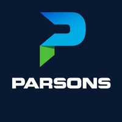
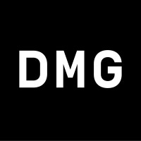

About
Currently pursuing my Masters in Robotics from University of Maryland, College Park
Parsons X Computer Vision Intern
Previously,
- Robotics Engineer at Newspace Research and Technologies
- Research and Development Engineer (Robotics & IoT) at Neoflux
- Electronics and Communication Engineering undergraduate from Vellore Institute of
Technology-Vellore
- Certified Robotics Software Engineer by Udacity
- Occassionally dabble in all things tech. Follow my socials to stay updated!
Parsons

- Developed and benchmarked various approaches (Structure from Motion, NeRF, Gaussian Splatting) for 3D reconstruction from aerial views of sites surveyed for Federal Customers.
- Developed Parsnip, to help with facility inspections. It matches IR images to daytime shots with EXIF metadata, decreasing the hours spent combing the datasets to find matches. It matches and aligns the IR-RGB images via homography and has smart annotation tools to draw polygons, text and arrows.
- Helped set up and troubleshoot the Clearpath Husky A200 as a part of the Geophysics team with the Outdoor Nav software stack.
Newspace Research and Technologies
- Developed solutions for image projection, and orthorectification of UAV feeds onto a map. Developed an end-to-end near real-time image stitching pipeline integrated with the fixed-wing swarming stack.
- Develop a standardized pipeline for accessing aerial camera feeds with metadata in simulation following the MISB 0601 KLV standard.
- Successfully integrated the Epsilon E175 EO/IR camera with a prototype VTOL and tested object tracking and geolocating algorithms.
Neoflux

Autonomous Land Mapping Robot
Developed a fully autonomous exploration robot to map an unknown area in 3D. Designed the chassis, electronics, and custom algorithms for navigation
Setup GPS RTK (Base and Rover) and IMU and implemented Global EKF with the robot_localization package to get centimeter-level accuracy in positioning
- Setup scripts and algorithms to import contours and set goal positions for maximum coverage (Coverage Path Planning)
- Setup the ROS Navigation Stack with the teb_local_planner to ensure smooth motion with dynamic obstacles
Protection One (Client)
Worked on the prototype of the alarm-based intercom product for Protection One.
Developed a solution for a production-grade multithreaded VOIP product with G711 alaw encoding and encryption based on the Raspberry Pi CM4 module. Designed a carrier board with suitable components for audio recording, processing, and playback.
Worked on a set of internal reference projects, blogs, and content to build Neoflux (Previously R&D THIS IS! DMG).
- Edge gesture recognition to control a robotic arm using TF Lite, EdgeImpulse, ROS
- Designed a 5DoF Robotic Arm with a feedback control loop compatible with the ros_control framework
- Designed and Developed an AMR as a testbench for various algorithms and projects using the ROS navigation stack
- Designed a portable battery solution for IoT projects capable of wireless charging.